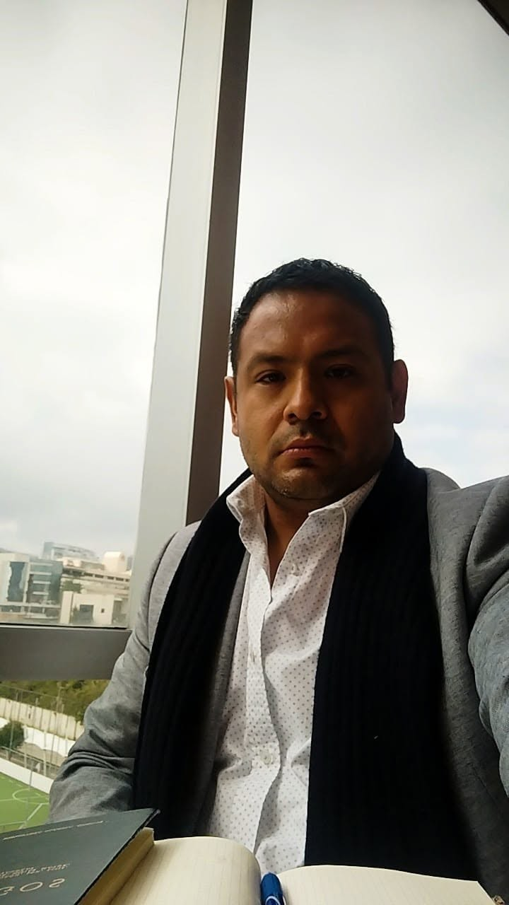
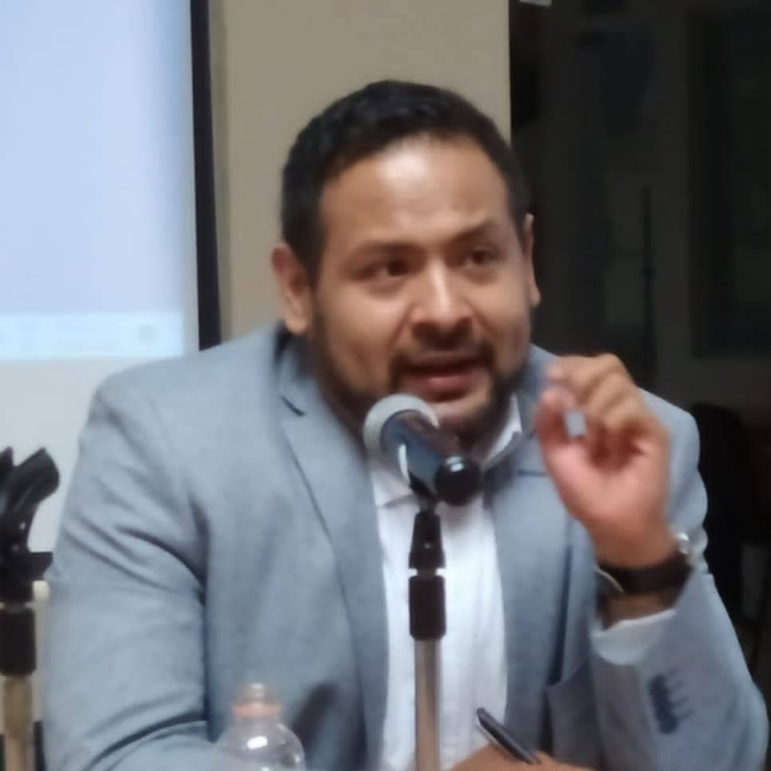

Historicidad
Los conceptos políticos cambian porque cambian las relaciones sociales que intentan comprender.
Filosofía política · Teoría del Estado · Filosofía del derecho
Investigo cómo las transformaciones históricas del capitalismo modifican la propiedad, el Estado, el derecho, la libertad y la vida social; cómo los filósofos han construido categorías para comprender esas mutaciones y sus contradicciones; y cómo han pensado los procesos de crítica, ruptura y subversión.

Perfil académico
Doctor en Humanidades, con especialidad en Filosofía Moral y Política, por la Universidad Autónoma Metropolitana-Iztapalapa, donde obtuve la Medalla al Mérito Universitario. Maestro y Licenciado en Filosofía por la Universidad Nacional Autónoma de México, con mención honorífica en ambos grados.
Mi trabajo filosófico está atravesado por una pregunta fundamental: ¿cómo se constituyen, legitiman y transforman históricamente las formas de opresión y dominación, y qué conceptos han elaborado los filósofos para comprender su reproducción, sus contradicciones y las rupturas que pueden producirse en su interior?
Esta pregunta recorre problemas que van de la Reforma y las disputas modernas sobre libertad, propiedad y esclavitud hasta la crítica del capitalismo, el acontecimiento político y las transformaciones contemporáneas del Estado bajo la financiarización.
Programa de investigación
He denominado filosofía de la subversión al programa que articula mis investigaciones sobre las transformaciones históricas del capitalismo, la constitución de órdenes de dominación y las categorías filosóficas con las que se han pensado sus crisis y sus rupturas.
“Subversión” no designa en este programa una doctrina política ni un proyecto histórico predeterminado. Designa un problema filosófico: cómo y bajo qué condiciones un orden que se presenta y se reproduce como estable puede entrar en contradicción, ser impugnado y dar lugar a nuevas formas de subjetivación, legitimidad y organización de la vida común.
El programa no parte de una oposición simple entre dominadores y dominados. Reconstruye las mediaciones económicas, jurídicas, políticas, religiosas, culturales y subjetivas mediante las cuales un orden adquiere consistencia, y estudia también las contradicciones de los discursos universales de libertad, derecho y humanidad.
Los conceptos políticos cambian porque cambian las relaciones sociales que intentan comprender.
Libertad, propiedad, derecho y universalidad pueden contener tanto potencias emancipatorias como formas de exclusión.
Economía, política, derecho, religión y subjetividad deben reconstruirse en sus mediaciones, no como fenómenos aislados.
La ruptura es objeto de investigación: interesa comprender cómo surge, cómo ha sido pensada y qué nuevas formas de subjetivación abre.
Objeto histórico
Entiendo el capitalismo como un modo de producción y reproducción que ha transformado profundamente la vida política, social, económica y cultural. Su lógica no se agota en el mercado: modifica instituciones, relaciones de propiedad, formas de subjetividad y condiciones de interacción social.
Una de sus fronteras estructurales aparece entre quienes poseen y controlan capital —productivo o financiero— y quienes dependen de relaciones económicas que no controlan. Esa asimetría no parte de una igualdad material originaria: está atravesada por procesos históricos de apropiación, acumulación, desposesión, colonialismo y esclavitud.
El capitalismo produce contradicciones —concentración de riqueza, desigualdad, exclusión y conflictividad social— que puede absorber, desplazar o administrar sin necesariamente resolver. De ahí la necesidad de reconstruir históricamente cómo esas contradicciones cambian de forma.
Hipótesis metodológica
La filosofía moderna no fue ajena a la profunda transformación de las relaciones sociales que acompañó el surgimiento de la sociedad comercial y la consolidación del capitalismo. Propiedad, libertad, soberanía, sociedad civil, mercado y Estado adquirieron nuevos sentidos, y los filósofos elaboraron categorías para habérselas con una realidad que estaba cambiando.
Por eso regreso a los modernos. No para reconstruir una historia puramente doctrinal, sino para comprender qué transformaciones intentaban pensar, qué problemas económicos, jurídicos, políticos y religiosos tenían ante sí, y dónde aparecen las contradicciones internas de sus propios lenguajes filosóficos.
Esta lectura exige atender tanto a las obras canónicas como a escritos menos frecuentados, textos circunstanciales y debates que permiten reconstruir el horizonte intelectual de cada autor. Una afirmación universal sobre libertad o derecho puede adquirir un sentido distinto cuando se contrasta con posiciones concretas sobre propiedad, esclavitud, colonialismo, religión o guerra.
Locke, Rousseau y Hegel, junto con los fisiócratas y Adam Smith, pensaron dimensiones distintas de ese nuevo mundo. Marx convirtió sus contradicciones en objeto de crítica; Lukács insistió en la categoría de totalidad frente a las lecturas que atomizan los cambios económicos, políticos y sociales; y Polanyi reconstruyó históricamente la expansión de la sociedad de mercado.
Punto de inflexión
Marx constituye un punto arquimédico dentro de este recorrido. Con él, el capitalismo deja de ser solamente el contexto histórico de la filosofía política y se convierte en objeto explícito de investigación y crítica.
Mi trabajo sobre la antifilosofía de Marx se interesa por la búsqueda de un método capaz de pensar materialmente las transformaciones del capital y las formas de opresión de la sociedad moderna. La reelaboración de la dialéctica y la historicidad de las relaciones sociales permiten comprender que las formas políticas y jurídicas no pueden estudiarse separadas de sus condiciones materiales.
Lukács prolonga esta exigencia mediante la categoría de totalidad. Su lectura de Hegel muestra que incluso la dialéctica hegeliana puede comprenderse como una respuesta conceptual a un mundo económico, político y social en transformación. Frente a perspectivas que atomizan los procesos históricos, la totalidad permite reconstruir sus mediaciones.
Mapa de investigación
Lutero y Müntzer permiten pensar una transformación religiosa que reorganiza la relación del individuo con la conciencia, la autoridad y el orden político. En Müntzer aparece además una teología política de carácter emancipatorio y subversivo.
Trabajos vinculados: Martín Lutero: la Reforma protestante y los orígenes oscuros de la modernidad; “La teología política de Thomas Müntzer”.
Locke, Leibniz y Rousseau permiten reconstruir las tensiones internas del universalismo moderno. El iusnaturalismo formula principios de libertad y derecho natural, pero puede coexistir con exclusiones coloniales, religiosas o civilizatorias. En Rousseau, la propiedad de sí y la inalienabilidad de la libertad funcionan como límites frente a la posibilidad de convertir a una persona en propiedad de otra.
Trabajos vinculados: Locke y colonialismo; Leibniz, esclavitud y raza; Rousseau, propiedad y esclavitud.
Hegel piensa la libertad como algo que debe adquirir existencia en el derecho y en la vida de un pueblo. La transformación política es significativa cuando produce una forma más concreta de libertad. Lukács prolonga el problema desde la totalidad: las transformaciones del capitalismo no pueden comprenderse separando artificialmente economía, política, cultura y subjetividad.
Trabajos vinculados: Hegel y la idea de libertad; Lukács y la dialéctica hegeliana.
Mi lectura de Marx se interesa por la búsqueda de un método capaz de pensar las transformaciones del capital y las formas de opresión que produce. Althusser y Badiou desplazan la pregunta hacia la ruptura: cómo escribir filosóficamente un acontecimiento que interrumpe la reproducción de un orden y cómo se constituye el sujeto que sostiene sus consecuencias. La noción badiousiana de invariante comunista aparece aquí como categoría para interpretar la recurrencia histórica de determinadas aspiraciones igualitarias.
Trabajos vinculados: la antifilosofía de Marx; Althusser y Badiou; acontecimiento político.
El capitalismo contemporáneo ha modificado las condiciones en las que los Estados ejercen soberanía y los ciudadanos ejercen derechos. Mi investigación estudia la financiarización, las arquitecturas jurídicas transnacionales y la emergencia de poderes privados capaces de condicionar la decisión pública. Para conceptualizar esta transformación he trabajado con la categoría de poder privado supraestatal difuso.
Trabajo vinculado: “La degradación del Estado y del sujeto en la ideología neoliberal”.
Obra seleccionada
Cada trabajo aborda un problema específico, pero adquiere sentido dentro de una investigación más amplia sobre las formas históricas de la dominación, las contradicciones de la libertad y las condiciones de la subversión.
O Manguezal. Revista de Filosofia, vol. 1, núm. 22, pp. 69–85.
Lugar en el programa: reconstruye las tensiones de la filosofía leibniziana frente a la esclavitud y la raza. La crítica a la esclavitud natural no elimina por sí sola todas las condiciones históricas bajo las cuales la esclavización puede reaparecer.
Aitías. Revista de Estudios Filosóficos, vol. 4, núm. 8, pp. 97–148.
Lugar en el programa: lleva el problema de la dominación al capitalismo contemporáneo. Examina cómo la transformación de las capacidades estatales, el debilitamiento de derechos y el poder económico transnacional degradan la vida política del Estado y del ciudadano.
Revista de Filosofía, Universidad del Zulia, vol. 40, núm. 106, pp. 62–81.
Lugar en el programa: muestra que la propiedad no es únicamente un principio de desigualdad. La propiedad de sí establece un límite frente a la alienación de la persona: la libertad no puede transferirse ni venderse legítimamente.
Aitías. Revista de Estudios Filosóficos, vol. 3, núm. 6, pp. 249–286.
Lugar en el programa: desplaza la investigación desde la reproducción de un orden hacia su posible interrupción: acontecimiento, ruptura, constitución del sujeto y escritura filosófica de la subversión.
Aitías. Revista de Estudios Filosóficos, vol. 2, núm. 4, pp. 155–189.
Lugar en el programa: estudia la búsqueda marxiana de una forma de pensamiento capaz de abandonar la especulación abstracta y pensar materialmente las transformaciones sociales, el capital y las condiciones históricas de la opresión.
Aitías. Revista de Estudios Filosóficos, vol. 1, núm. 1, pp. 1–42.
Lugar en el programa: analiza la tensión entre libertad natural, propiedad y universalidad, por un lado, y las exclusiones que aparecen en el tratamiento lockeano del colonialismo, la esclavitud, el dinero y los pueblos americanos, por otro.
Revista de Filosofía de la Universidad de Costa Rica, vol. 59, núm. 155, pp. 51–68.
Lugar en el programa: examina el acontecimiento como figura de ruptura histórica y prepara la posterior investigación sobre sujeto, fidelidad y subversión.
Revista de Filosofía, Universidad Iberoamericana, vol. 52, núm. 149, pp. 114–147.
Lugar en el programa: estudia la libertad como realidad que debe objetivarse en instituciones y en la vida ética de un pueblo. La ruptura histórica adquiere sentido cuando consigue instalar una forma más concreta de libertad.
Revista de Filosofía de la Universidad de Costa Rica, vol. 57, núm. 149, pp. 11–22.
Lugar en el programa: constituye un antecedente de la investigación sobre ruptura del orden. Müntzer permite pensar una teología política de carácter emancipatorio en el contexto de las transformaciones religiosas y sociales de la Reforma.
Bibliografía académica
Participación en Alain Badiou, El balcón del presente. Conferencias y entrevistas, Siglo XXI / Facultad de Filosofía y Letras de la UNAM, 2008: establecimiento del texto “Amor y psicoanálisis”, conferencia dictada en francés en México.
Recepción académica
La recepción registrada incluye citas en libros, artículos arbitrados, tesis y bibliografías especializadas, además de referencias a trabajos de edición, coordinación y traducción.
Trayectoria
Universidad Autónoma Metropolitana, Unidad Iztapalapa. Promedio 10. Medalla al Mérito Universitario, 2018.
Universidad Nacional Autónoma de México, Facultad de Filosofía y Letras. Mención honorífica.
Universidad Nacional Autónoma de México, Facultad de Filosofía y Letras. Mención honorífica.
UAM-Iztapalapa · UAM-Cuajimalpa · Facultad de Filosofía y Letras de la UNAM.
Evaluación de proyectos de investigación y posdoctorales; dictaminación de artículos y capítulos para publicaciones académicas de México, España y Colombia.

Investigación actual
El capitalismo nunca ha existido al margen del Estado: necesita instituciones capaces de garantizar propiedad, contratos y condiciones generales de producción y reproducción. Al mismo tiempo, el Estado ha conservado, en grados históricos variables, capacidades para regular, redistribuir, reconocer derechos y someter determinadas actividades al derecho público.
La financiarización contemporánea altera esta relación. La movilidad del capital, las arquitecturas jurídicas transnacionales y las redes privadas de intermediación reducen la capacidad efectiva de los Estados para gobernar procesos que atraviesan sus fronteras.
Un Estado fuerte no es un Estado arbitrario. Es un Estado con capacidad jurídica e institucional suficiente para perseguir el bien común, proteger a quienes integran la comunidad política y hacer que los poderes económicos que afectan la vida colectiva sean observables, regulables y sancionables. Su fortaleza frente al capital debe coexistir con límites jurídicos frente al ciudadano.
La degradación comienza cuando las instituciones dejan de proteger universalmente los derechos, interpretan de manera parcial sus propios principios o trasladan al ciudadano el costo de sus incapacidades. La cuestión de la soberanía es, por ello, también una cuestión de libertad política.
Entrevistas y medios
Contacto
Invitaciones, proyectos de investigación, seminarios, publicaciones y colaboración académica.